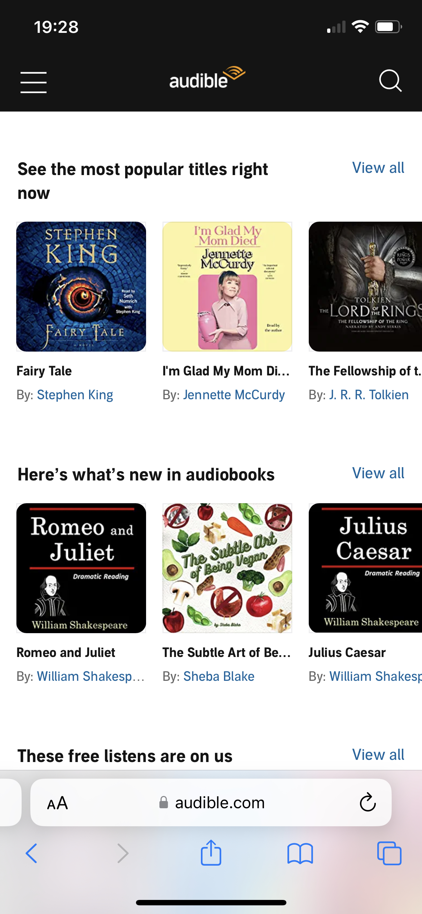
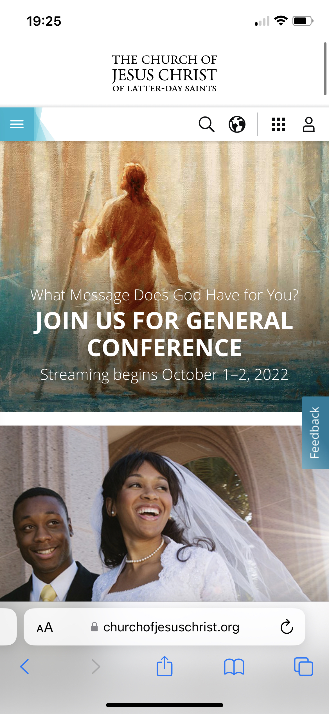

Rule of Thrids
Provo Canyon Adventurees

Provo Canyon Adventures follows the "Rule of Thrids" with this picture as a focal point. It shows some of what they offer but also that the people in the picutre is having fun. It engages the customer, while also being simple to book an adventure with the book button with the picture. They don't have to go looking for where to book thier adventure.
Alignment
Audible
For moving websites such as audible, netflix, and many others it is important to alignment on their websites. Without the alignment on auidble suspense novles could be in with biography or self help. Audilbe has their alignment set up that the books are set up in thier genera. By doing this it is easier for the cusotmer to navigate and find exactly what they are looking for.
Clean Design
The Church of Jesus Christ of Latter-Day Saints
This website has a clean, simple, and cluter free design. The pictures are calming and evenly spaced. The clean design makes it user friendly so that anyone will be able to find what they are looking for with ease.